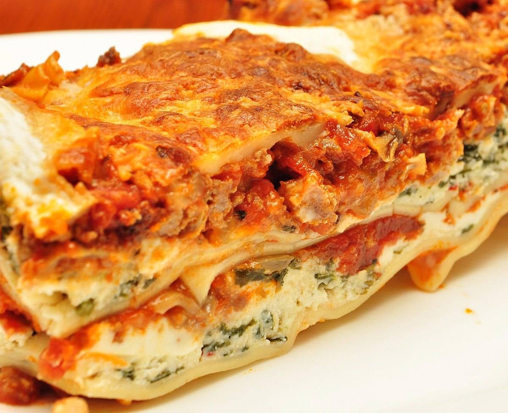

Lasagna recipe

Description
Lasagna is a wide, flat sheet of pasta. Lasagna can refer to either the type of noodle or to the typical lasagna dish which is a dish made with several layers of lasagna sheets with sauce and other ingredients, such as meats and cheese, in between the lasagna noodles.
Ingredients
- onion, diced
- 1 carrot, diced
- 1 celery stalk, diced
- 2 garlic cloves, finely sliced
- 250g beef mince
- 250g pork mince
- 1 tbsp tomato purée
- 400g tin chopped tomatoes
- 200ml beef stock
- 200ml red wine
- 1 tsp Worcestershire sauce
- 9-12 lasagne sheets (depending on the size of your baking dish)
- 50g Parmesan, grated
- 150g pack mozzarella, shredded
For the white sauce
- 50g butter
- 50g plain flour
- 550ml semi-skimmed milk
Steps
-
In a large pan, heat the olive oil over a low heat. Fry the onion, carrot, celery and garlic for 5 mins, or until softened.
Add the mince and fry on a medium heat until golden. Turn up the heat, pour in the wine and bubble until reduced. Stir in the tomato purée,
chopped tomatoes and stock. Add in the Worcestershire sauce and simmer for 15 mins, or until the liquid has reduced. Season.
-
Meanwhile, make the white sauce. Melt the butter in a small saucepan over a low heat and add the flour.
Whisk until combined and cook on low for 1-2 mins. Remove from the heat and gradually whisk in the milk until you have a loose sauce.
Season. Return to a gentle heat and whisk constantly until the sauce thickens.
-
Once the dish has cooled completely, transfer it to an airtight, freezer-safe container, seal and freeze for up to 1-3 months.
To serve, defrost thoroughly in the fridge overnight before reheating.
Loosely cover with foil and bake until dish is thoroughly heated through. Reheat until piping hot.